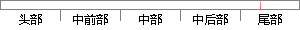

5、在进行恶意域名检测的实验中，由于正负样本差距过大，我采用了负采样的做法，使得正负样本比例在一定的范围内，同时保证样本集和验证集的正负样本比例大致相当。
片段位置图

相似结果|
相似片段 1：，将所有数据集归一化至 0 到 1 标准区间内，在一些数据集上使用了基本的采样策略处理。实验中，由于是监督式算法，故从标记样本集中划出一定比例的正负类样本，作为验证集。最终的分类结果采用评价指标 G-means对分类结果进行评价。对比算法有 SMOTE插值法，欠采样算法，过采样算法，经典 SVM算法以及
|
※ 片段修改建议 ※
近似词参考：- 进行：举行
- 恶意：歹意
- 实验：尝试 实行 试验
- 由于：因为
- 采用：采取 接纳 采纳
- 一定：必然 肯定 必定
- 保证：包管
- 大致：大抵
- 相当：相称 至关
系统自动生成语句：5、在举行歹意域名检测的尝试中，因为正负样本差距过大，我采取了负采样的做法，使得正负样本比例在必然的范围内，同时包管样本集和验证集的正负样本比例大抵相称。
注：本片段修改建议为系统自动生成，仅供参考。